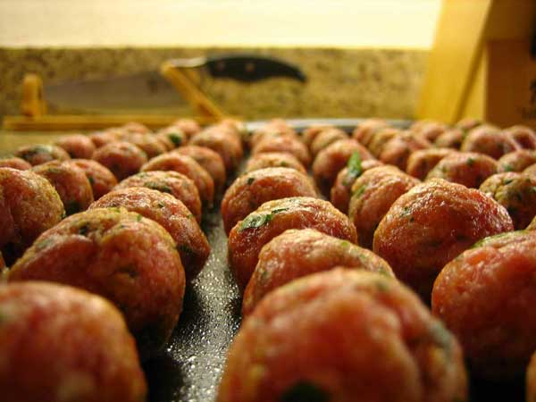

Meatballs

Photo by Mr. Usaji
A traditional Italian meatball and tomato based sauce recipe can be served on your choice of pasta or on its own with ciabatta bread.
Serves up to 4 people.

Ingredients
- 1lb lean ground beef
- 1lb ground pork
- 2 garlic cloves, crushed
- 3 cups fresh white breadcrumbs
- 2 eggs
- 5 tbsp chopped parsley
- 3/4 cup of grated parmesan cheese
Sauce
- 6 1/2 cups of Passata, sieved tomatoes
- 8 basil leaves
- 3 tbsp extra virgin olive oil
- salt and pepper
Procedure
- Preheat the oven to 220 ° and grease a large baking tray.
- In a large mixing bowl, place the pork, beef, bread crumbs, parsley and cheese. Season with the salt and pepper and add the eggs. Mix together with your hands then roll into equal sized balls 12-16. Place the meatballs onto the baking tray and cook for 12-15 minutes.
- While the meatballs are cooking pour the passata and olive oil in a large saucepan over medium heat. Season to suit with the salt, pepper and basil. Bring the mixture to a boil then gently simmer for about 10 minutes stirring occasionally.
- Now remove the meatballs from the oven and add them to the sauce (don’t worry if the meatballs don’t look done when they come out of the oven they will finish cooking in the sauce). Cook on low for 30 minutes stirring occasionally. Serve hot.